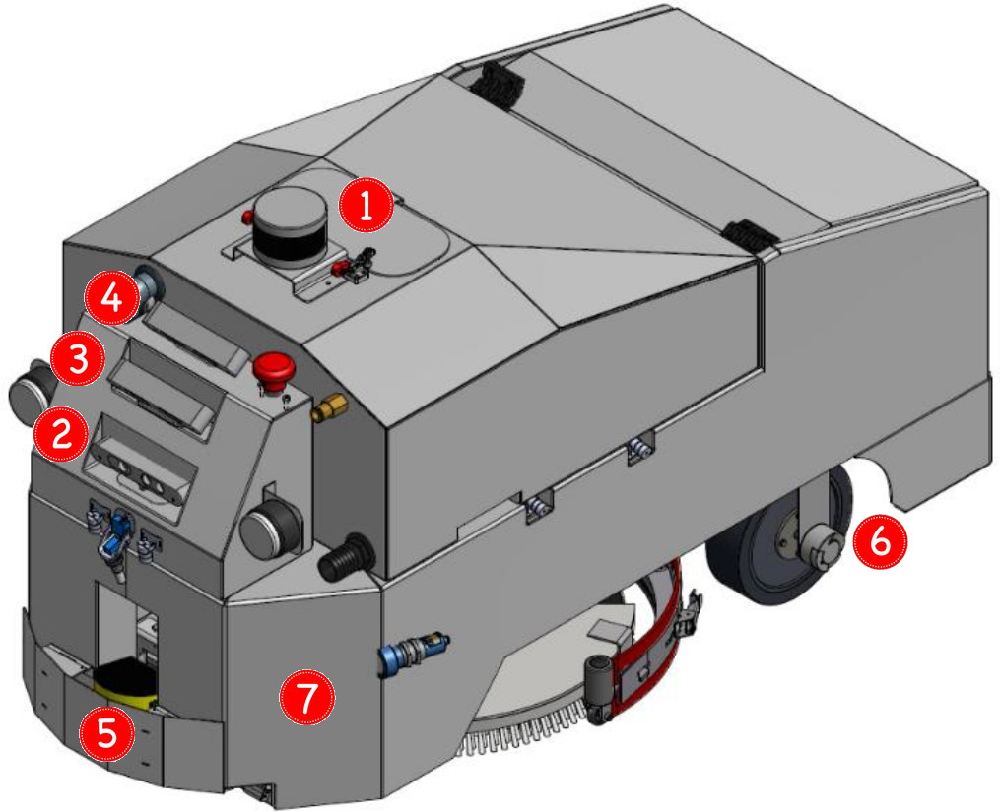

Collected by our very own FLOBOT (FLOor washing RObot)
Description
This dataset was collected with FLOBOT - an advanced autonomous floor scrubber - includes data from four different sensors for environment perception, as well as the robot pose in the world reference frame.
Specifically, FLOBOT relies on a 3D lidar and a RGB-D camera for human detection and tracking, and a second RGB-D and a stereo camera for dirt and object detection.
Data collection was performed in four public places (three of them are released in this dataset), two in Italy and two in France, in FOLBOT working mode with the corresponding testing procedures for final project validation.
For a quick overview, please refer to the following video.
Contributions
Robot Operating System (ROS)rosbag files recorded from four sensors including a 3D lidar, two RGB-D cameras and a stereo camera, and the robot pose in the world reference frame are provided. All the sensory data are synchronized at the software level (i.e. time stamped by ROS).
Data collection was carried out with the real FLOBOT prototype, in real environments including airport, warehouse and supermarket. While these public places are rarely to obtain permission to perform data collection especially with robots.
Annotation of pedestrian in 3D lidar, dirt and object in RGB-D camera are provided.
Although not our main use, since the dataset provides also robot pose in the world reference frame, it can be used for localization and mapping problems. Moreover, as our data involves very characteristic public scenarios (i.e. airport, warehouse and supermarket), it is also suitable for semantic and contextual study.
Citation
If you publish work based on, or using, this dataset, we would appreciate citations to the following:
manuscript in preparation ...
Recording platform

Velodyne VLP-16 3D lidar
Xtion PRO LIVE RGB-D camera (forward-facing for human detection)
Xtion PRO LIVE RGB-D camera (floor-facing for dirt and object detection)
ZED stereo camera (floor-facing for dirt and object detection)
SICK S300 2D lidar
OEM incremental measuring wheel encoder
Xsens MTi-30 IMU (inside of the robot)
Recording environments
Four pilot sites were selected for the final FLOBOT validation, which led to this dataset (with three of them).
These pilot sites descriptions are important in order to understand the requirements for each use case and accordingly design the FLOBOT robot and complete system.
Zhi Yan, Tom Duckett, and Nicola Bellotto. Online learning for 3D LiDAR-based human detection: Experimental analysis of point cloud clustering and classification methods. Autonomous Robots, 2019. [BibTeX | PDF]
Georg Halmetschlaeger-Funek, Markus Suchi, Martin Kampel, and Markus Vincze. An empirical evaluation of ten depth cameras: Bias, precision, lateral noise, different lighting conditions and materials, and multiple sensor setups in indoor environments. In IEEE Robotics & Automation Magazine, 2019. [PDF | Dataset]
Zhi Yan, Li Sun, Tom Duckett, and Nicola Bellotto. Multisensor online transfer learning for 3D LiDAR-based human detection with a mobile robot. In Proceedings of the 2018 IEEE/RSJ International Conference on Intelligent Robots and Systems (IROS), Madrid, Spain, October 2018. [BibTeX | PDF | Code | Dataset]
Georg Halmetschlaeger-Funek, Johann Prankl, and Markus Vincze. Towards autonomous auto calibration of unregistered RGB-D setups: The benefit of plane priors. In Proceedings of the 2018 IEEE/RSJ International Conference on Intelligent Robots and Systems (IROS), Madrid, Spain, October 2018. [PDF]
Li Sun, Zhi Yan, Sergi Molina Mellado, Marc Hanheide, and Tom Duckett. 3DOF pedestrian trajectory prediction learned from long-term autonomous mobile robot deployment data. In Proceedings of the 2018 IEEE International Conference on Robotics and Automation (ICRA), Brisbane, Australia, May 2018. [BibTeX | PDF | Dataset | Video]
Farhoud Malekghasemi, Georg Halmetschlaeger-Funek, and Markus Vincze. Autonomous extrinsic calibration of a depth sensing camera on mobile robots. In Proceedings of the Austrian Robotics Workshop (ARW), Innsbruck, Austria, May 2018 [PDF]
Zhi Yan, Tom Duckett, and Nicola Bellotto. Online learning for human classification in 3D LiDAR-based tracking. In Proceedings of the 2017 IEEE/RSJ International Conference on Intelligent Robots and Systems (IROS), pages 864-871, Vancouver, Canada, September 2017. [BibTeX | PDF | Code | Dataset | Video1 | Video2]
Andreas Grünauer, Georg Halmetschlaeger-Funek, Johann Prankl, and Markus Vincze. The power of GMMs: Unsupervised dirt spot detection for industrial floor cleaning robots. In Proceedings of the Towards Autonomous Robotic Systems - 18th Annual Conference (TAROS), Guildford, UK, July 2017. [PDF | Dataset]
Simon Schreiberhuber, Thomas Mörwald, and Markus Vincze. Bilateral filters for quick 2.5D plane segmentation. In Proceedings of the OAGM&ARW Joint Workshop, Vienna, Austria, May 2017. [PDF]